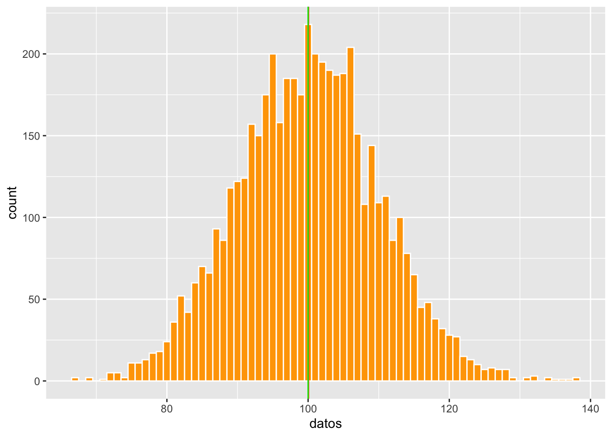
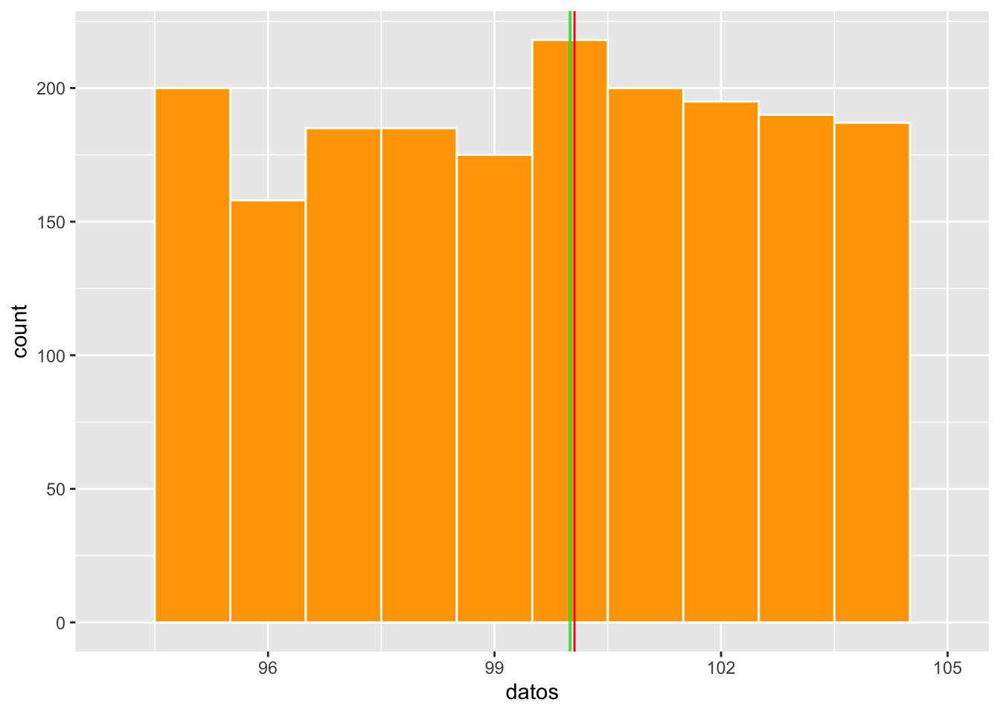
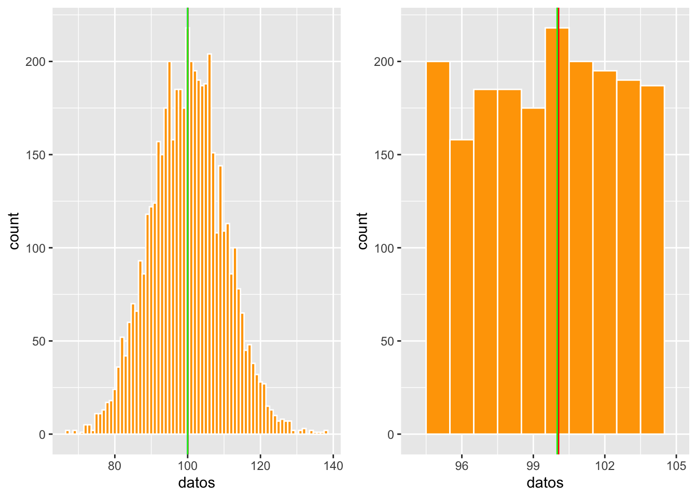
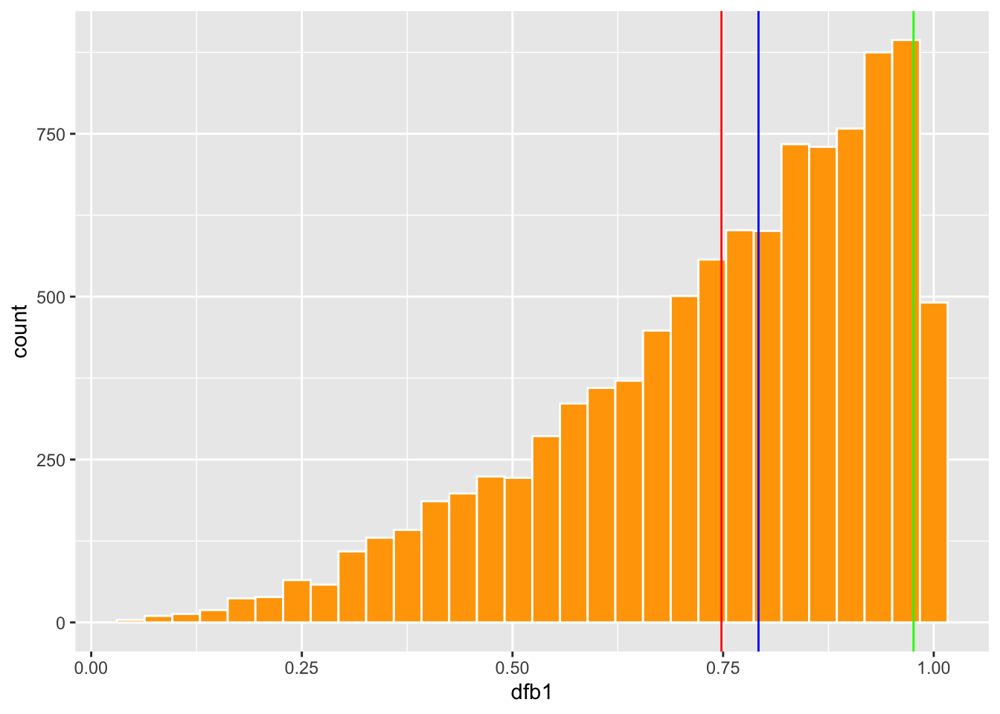
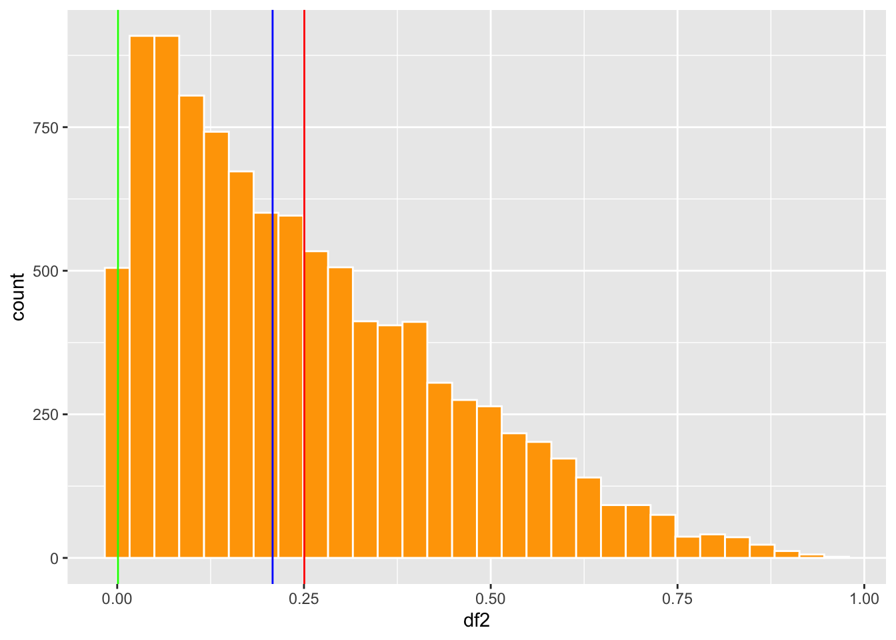
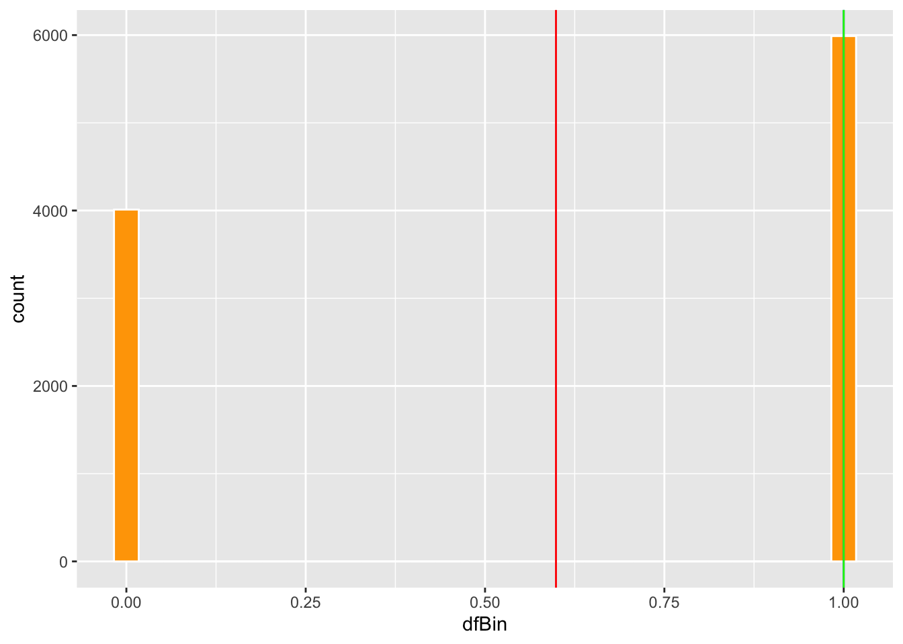

Capítulo 6 Medidas de tendencia central
Fecha de la última revisión
## [1] "2026-10-01"

library(ggplot2)
library(Hmisc)
library(gridExtra) # Un paquete para organizar las figuras de ggplot2Las medidas de tendencia central se llaman así porque su valor tiende a ubicarse en el centro de la distribución de los datos. Hay por lo menos 16 tipos de medidas de tendencia central (https://en.wikipedia.org/wiki/Central_tendency). En este curso mencionaremos solamente 3 de ellas.
- El promedio aritmético
- La mediana
- La moda
El promedio (media) es la suma de los valores dividida entre \(n\). La mediana es el valor central de los datos ordenados. La moda es el valor que aparece con más frecuencia.
El promedio aritmético se usa desde la antigüedad, pero se volvió central en la ciencia con Gauss y Laplace al promediar mediciones astronómicas. El término mediana lo popularizó Francis Galton en 1881 como una medida robusta del centro.
6.1 Calculando el promedio
mean(x) — promedio aritmético.
-
Qué hace: suma los valores de
xy los divide entre la cantidad de datos. -
Cuidado: es sensible a los valores atípicos; si hay
NA, usamean(x, na.rm = TRUE).
Aquí creamos una lista de datos con la función c( ) y con la función mean podemos calcular el promedio. El promedio es la suma de los valores dividida por la cantidad de valores en la lista.
\[\bar{x}=\frac{\sum_{i=1}^{n}x_i}n\]
## [1] 56.2 Cuando el promedio no está localizado en el centro
Digamos que yo tengo la cantidad de semillas producida por 11 plantas, la primera no produjo semillas, la segunda 2 semillas y así sucesivamente, hasta la última que produjo 1000 semillas. Nota que en este caso el promedio no se encuentra en el centro de los datos, por lo que NO es un buen indicador de la tendencia central. Cuando esto ocurre uno no debería usar el promedio para describir la tendencia central de los datos.
El promedio es muy sensible a valores atípicos (outliers) y a las distribuciones sesgadas: un solo valor extremo puede arrastrarlo lejos del centro. En esos casos la mediana describe mejor la tendencia central.
## [1] 95
mean(x)## [1] 956.3 La mediana
median(x) — mediana.
-
Qué hace: ordena los datos y devuelve el valor central (o el promedio de los dos centrales si
nes par). - Ventaja: es robusta a los valores atípicos, por eso describe mejor el centro en distribuciones sesgadas.
6.4 Con n impares
Cuando el promedio no es un índice adecuado de la tendencia central tenemos dos alternativas: la mediana y la moda. La mediana es el valor en el centro después de haber organizado los datos del más pequeño al más grande.
\[\text{Mediana} = x_{\left(\frac{n+1}{2}\right)}\]
Donde n es la cantidad de valores ordenados del más pequeño al más grande; se selecciona el valor que queda en el centro. Lo que hace la función median() es poner los valores en orden y determinar cuál es el valor central. Aquí, para demostrar lo que hace la función: 1) creo una lista de valores, 2) los pongo en orden y 3) al mirarlos en orden vemos que el valor 6 queda en el centro. Pero este paso no es necesario, ya que la función median() lo hace automáticamente.
## [1] 0 1 2 3 4 5 6 7 23 24 26 247
## [13] 43626
length(b)## [1] 13
median(b)## [1] 6
mean(b)## [1] 3382.615## [1] 50009.5
median(muchos)## [1] 50000.56.5 Ejemplo # 2 de mediana
datos=c(1:100)
datos## [1] 1 2 3 4 5 6 7 8 9 10 11 12 13 14 15 16 17 18
## [19] 19 20 21 22 23 24 25 26 27 28 29 30 31 32 33 34 35 36
## [37] 37 38 39 40 41 42 43 44 45 46 47 48 49 50 51 52 53 54
## [55] 55 56 57 58 59 60 61 62 63 64 65 66 67 68 69 70 71 72
## [73] 73 74 75 76 77 78 79 80 81 82 83 84 85 86 87 88 89 90
## [91] 91 92 93 94 95 96 97 98 99 100
median(datos)## [1] 50.5## [1] 4.35 13.00 19.00 28.20 37.00 46.00
median(km)## [1] 23.66.6 Con n pares
Cuando hay una cantidad par de datos, se suman los dos valores centrales y se calcula su promedio.
\[\text{Mediana} = \frac{1}{2}\left( x_{\left(\frac{n}{2}\right)} + x_{\left(\frac{n}{2}+1\right)} \right)\] En el siguiente caso tanto el valor 6 como el 7 quedan en el centro, por lo que la mediana es el promedio de estos dos valores.
## [1] 0 1 2 3 4 5 6 7 7 23 24 26
## [13] 247 43626
median(b)## [1] 6.56.7 La moda
La moda es el valor más común. Para encontrar la moda hay que crear una función, ya que R base no incluye una para ello.
# Create mode() function to calculate mode
mode <- function(x, na.rm = FALSE) {
if(na.rm){ #if na.rm is TRUE, remove NA values from input x
x = x[!is.na(x)]
}
val <- unique(x)
return(val[which.max(tabulate(match(x, val)))])
}## [1] 3
## attr(,"freq")
## [1] 3
Mode(b)## [1] 7
## attr(,"freq")
## [1] 2## [1] 1 9
## attr(,"freq")
## [1] 2Ya pueden usar mode() para encontrar la moda del conjunto de datos. Vemos que el valor 7 es el más común en la lista.
Mode(b)## [1] 7
## attr(,"freq")
## [1] 2## [1] 26.8 Cuando es que el promedio, mediana y moda son iguales?
Los tres valores de tendencia central coinciden (o casi) cuando la distribución es simétrica, como la distribución normal en forma de campana. Aquí preparo una lista de datos con una distribución aproximadamente simétrica y evaluamos dónde quedan los tres valores. Se usa la función rpois (distribución de Poisson, que con una media grande se aproxima a la normal) para crear un conjunto de 5000 datos al azar con una media de 100.
## [1] 90 109 121 97 117 108 102 99 112 97 96 90 101 110 110 89 91 115
## [19] 90 84 101 103 94 103 100 105 88 94 92 81 114 110 103 90 98 97
## [37] 95 94 120 82 87 95 113 83 106 98 94 97 92 102 94 109 98 101
## [55] 113 112 102 91 103 109 106 108 100 92 104 99 98 106 87 98 117 92
## [73] 105 97 106 93 103 85 102 108 86 103 86 87 102 113 97 97 72 122
## [91] 119 111 103 105 91 111 91 100 110 109 95 104 103 84 98 101 103 102
## [109] 104 105 102 95 105 102 107 84 117 100 99 101 114 105 94 85 110 95
## [127] 90 111 87 98 115 109 109 98 89 107 84 104 91 111 85 90 89 104
## [145] 103 114 99 103 115 99 112 91 99 105 116 101 82 104 121 98 120 96
## [163] 114 111 103 90 96 105 107 116 123 80 100 109 98 100 104 90 87 101
## [181] 109 95 109 103 78 102 108 93 102 113 97 109 96 90 90 111 85 92
## [199] 107 101 102 89 99 84 87 87 118 111 109 110 106 82 103 101 98 95
## [217] 109 102 95 95 97 99 83 91 110 99 94 88 99 102 108 100 99 78
## [235] 109 103 104 96 111 101 99 111 116 111 103 101 88 102 98 102 99 109
## [253] 111 116 78 102 120 92 110 88 104 117 114 100 103 113 99 86 114 112
## [271] 92 102 98 99 104 116 102 114 95 81 99 109 96 104 105 98 101 99
## [289] 101 96 100 103 94 106 104 110 93 111 106 112 119 85 109 114 87 101
## [307] 106 100 112 96 85 77 101 115 91 101 100 103 91 112 118 97 99 114
## [325] 104 95 93 90 98 119 85 101 97 104 99 108 102 93 98 95 97 94
## [343] 85 112 79 83 102 97 102 119 123 83 104 97 98 93 86 91 81 98
## [361] 99 109 115 100 105 87 94 97 93 89 100 113 94 99 106 109 98 104
## [379] 83 95 91 103 86 103 88 101 98 114 106 87 112 107 113 103 97 100
## [397] 113 106 85 103 95 105 113 116 103 91 96 106 99 115 88 93 87 95
## [415] 93 103 107 102 94 107 105 85 94 91 104 113 114 105 94 100 114 94
## [433] 104 109 82 98 95 89 105 90 92 104 94 97 99 105 86 102 95 104
## [451] 100 109 108 98 95 106 100 105 103 103 107 90 101 99 99 92 89 91
## [469] 89 102 97 100 117 96 105 95 93 109 100 80 96 93 82 97 96 100
## [487] 88 103 109 100 92 109 118 106 102 88 98 126 76 105 115 95 111 88
## [505] 92 106 111 99 92 101 90 118 117 95 118 105 111 98 117 96 100 101
## [523] 95 92 104 90 121 91 87 105 113 110 76 105 112 104 107 107 100 89
## [541] 103 93 117 96 95 117 82 114 98 86 98 110 82 81 99 111 101 107
## [559] 105 107 116 92 94 124 92 116 93 117 117 98 113 98 79 92 71 110
## [577] 105 104 98 95 115 97 110 102 110 102 102 125 98 110 98 80 95 101
## [595] 102 99 105 108 97 100 107 99 97 110 100 102 92 117 98 92 114 86
## [613] 92 94 88 100 104 78 110 93 106 104 80 105 93 82 97 103 95 96
## [631] 90 116 89 90 96 99 111 100 105 87 91 112 106 92 98 96 114 96
## [649] 100 111 97 100 94 105 95 103 96 104 112 113 93 103 111 95 100 87
## [667] 101 93 98 101 101 92 97 107 106 102 107 99 98 112 110 87 78 91
## [685] 90 99 113 97 103 100 111 94 104 105 90 91 106 94 116 86 83 100
## [703] 113 107 98 97 92 126 90 104 100 85 108 100 88 104 94 100 90 100
## [721] 114 112 102 124 94 120 113 93 96 88 104 98 88 100 94 113 135 92
## [739] 99 106 102 107 111 99 82 109 92 104 124 106 108 102 91 111 109 90
## [757] 91 100 100 114 101 107 105 90 90 105 122 105 98 99 100 94 107 116
## [775] 115 94 99 86 101 98 102 89 94 98 96 100 94 98 119 99 92 103
## [793] 100 102 82 115 118 94 92 101 114 101 97 87 113 92 107 85 109 80
## [811] 105 89 95 99 97 117 107 100 105 101 89 102 100 105 97 92 114 109
## [829] 86 97 91 91 102 116 82 115 97 90 92 104 99 113 106 113 98 99
## [847] 88 99 98 88 88 114 105 92 96 106 95 93 104 115 95 100 105 86
## [865] 122 101 102 110 89 101 113 93 118 86 102 103 103 106 98 94 91 98
## [883] 81 113 102 82 114 121 85 91 114 110 108 92 87 127 75 112 102 102
## [901] 85 82 100 104 109 92 90 100 104 102 101 95 112 106 112 100 90 96
## [919] 110 116 104 101 125 103 89 103 113 117 92 87 107 100 104 94 100 88
## [937] 125 92 97 98 108 110 107 101 102 108 105 79 102 96 100 100 101 92
## [955] 113 110 108 114 108 87 102 102 96 104 88 100 109 101 106 125 90 96
## [973] 89 99 111 89 109 91 108 110 106 95 109 107 106 106 75 101 116 107
## [991] 96 101 106 99 121 96 107 103 94 107 87 85 108 109 94 106 96 98
## [1009] 89 84 119 107 95 98 101 110 93 102 112 111 100 121 89 106 86 101
## [1027] 84 91 104 104 91 91 94 108 99 90 94 94 92 88 93 109 103 99
## [1045] 88 91 79 101 112 101 98 90 121 90 110 96 91 85 101 93 94 100
## [1063] 84 96 81 117 84 103 106 105 105 95 98 101 102 76 115 96 103 106
## [1081] 94 121 106 107 108 98 96 102 113 115 93 97 85 85 123 91 94 115
## [1099] 116 121 95 114 94 104 105 115 113 112 83 101 103 91 117 97 91 102
## [1117] 101 101 77 107 94 108 101 84 85 93 106 98 105 100 90 102 93 102
## [1135] 100 98 96 111 102 104 93 109 110 106 94 86 95 107 100 106 89 107
## [1153] 106 88 94 96 90 106 95 114 104 107 80 107 105 106 99 96 101 119
## [1171] 93 88 90 109 97 92 114 97 96 113 110 104 106 113 105 104 108 102
## [1189] 72 99 100 95 99 89 109 96 108 92 86 97 102 107 88 111 100 98
## [1207] 101 107 102 92 86 105 90 112 108 90 98 98 107 87 99 106 113 91
## [1225] 77 124 92 106 96 98 111 88 101 94 104 98 103 114 107 101 103 109
## [1243] 116 90 118 87 97 113 98 103 88 105 102 116 97 103 89 99 106 102
## [1261] 84 115 84 93 102 102 101 101 87 107 106 104 95 78 85 87 107 89
## [1279] 95 94 90 91 100 114 84 91 96 111 99 107 93 102 93 90 92 98
## [1297] 104 97 98 93 99 118 83 100 86 116 82 81 105 107 88 99 108 109
## [1315] 91 105 102 91 92 99 97 90 115 99 102 93 93 101 117 96 100 102
## [1333] 106 96 102 87 106 97 120 100 109 94 109 92 82 82 111 89 97 98
## [1351] 92 94 100 106 83 93 109 103 97 112 99 86 97 106 114 103 94 110
## [1369] 102 91 97 109 109 104 102 106 104 104 88 87 106 119 91 105 103 97
## [1387] 108 114 115 99 111 111 92 92 94 95 94 115 108 101 94 97 90 98
## [1405] 110 94 94 103 91 97 117 116 85 101 114 128 115 89 108 117 105 95
## [1423] 100 91 81 105 105 103 82 91 86 103 109 98 93 131 94 108 98 106
## [1441] 88 113 108 88 87 80 97 95 99 98 109 106 92 107 110 115 98 110
## [1459] 100 111 79 104 93 95 102 100 113 88 95 96 104 98 96 87 101 109
## [1477] 112 99 91 87 93 98 108 86 118 97 98 94 95 91 92 100 94 97
## [1495] 103 103 103 93 98 104 92 110 92 113 100 85 112 99 82 91 107 95
## [1513] 117 104 123 101 104 81 108 100 104 107 106 99 96 103 88 117 121 100
## [1531] 105 107 110 96 95 107 115 89 99 86 104 95 106 101 96 80 85 110
## [1549] 101 113 105 84 121 111 107 118 92 105 104 110 112 106 105 89 103 95
## [1567] 100 111 106 100 100 99 92 90 106 103 78 100 110 100 108 82 103 92
## [1585] 97 103 92 102 93 107 103 111 103 101 95 110 97 104 93 104 94 103
## [1603] 90 85 110 93 97 96 114 89 113 96 95 81 94 106 104 84 96 112
## [1621] 105 95 105 108 98 99 98 99 93 97 83 91 83 85 127 100 110 104
## [1639] 86 88 85 105 90 115 92 94 101 89 115 94 100 80 103 106 97 114
## [1657] 93 108 111 120 100 99 115 103 103 95 101 115 97 105 97 95 98 96
## [1675] 91 89 105 98 90 88 94 101 101 93 109 111 92 104 115 118 99 101
## [1693] 105 100 101 90 102 89 109 98 112 105 114 89 107 103 102 105 109 107
## [1711] 90 92 106 99 104 108 116 81 91 103 85 101 96 99 101 124 100 99
## [1729] 122 95 92 97 105 117 108 104 105 91 106 89 89 89 104 117 103 91
## [1747] 104 105 101 86 103 92 104 100 89 114 104 105 102 96 104 89 104 105
## [1765] 109 95 97 94 106 103 85 116 112 109 101 76 108 101 104 83 82 98
## [1783] 95 108 87 92 100 118 102 90 117 80 92 112 107 82 102 99 108 108
## [1801] 110 103 100 106 100 119 115 106 110 103 100 76 103 119 98 87 108 109
## [1819] 115 116 113 97 86 104 106 98 112 89 111 104 105 94 109 105 105 108
## [1837] 107 99 90 105 93 104 98 85 98 115 107 102 96 105 123 78 105 95
## [1855] 97 107 90 105 108 81 94 101 108 102 94 108 87 94 92 93 114 90
## [1873] 105 106 99 106 95 91 101 92 93 82 94 88 107 92 93 117 92 117
## [1891] 78 113 102 110 121 106 98 92 82 110 101 107 104 118 109 113 95 95
## [1909] 105 97 108 110 94 98 114 78 75 92 102 106 104 101 105 98 110 90
## [1927] 117 93 93 97 89 108 86 96 109 115 93 95 108 92 114 97 100 120
## [1945] 112 104 101 119 99 92 93 112 87 83 100 101 95 110 105 113 104 116
## [1963] 98 82 101 83 95 101 106 78 106 100 94 102 112 94 95 99 111 97
## [1981] 105 105 82 105 106 95 101 110 115 86 112 100 107 86 87 103 99 99
## [1999] 113 109 103 109 83 87 104 67 96 104 105 101 88 79 95 103 106 101
## [2017] 104 97 118 109 100 108 110 108 108 108 106 97 112 118 95 89 107 88
## [2035] 110 94 98 103 95 91 90 109 85 109 95 94 99 103 97 75 98 109
## [2053] 89 95 89 121 117 87 104 116 100 88 91 92 102 97 102 95 107 96
## [2071] 105 117 94 111 83 92 101 98 102 118 95 84 106 105 102 97 98 76
## [2089] 104 97 86 101 96 104 105 97 90 100 99 106 100 91 105 93 105 98
## [2107] 109 93 109 98 73 83 106 98 94 95 84 93 107 101 114 94 93 93
## [2125] 97 88 92 90 128 99 97 99 99 111 106 120 94 82 109 92 115 96
## [2143] 89 105 103 85 94 114 97 107 94 104 120 113 115 97 102 98 93 109
## [2161] 104 97 82 100 103 109 106 106 92 86 102 93 101 95 111 102 102 105
## [2179] 94 102 95 109 107 102 106 78 114 100 112 99 92 92 98 104 92 99
## [2197] 104 112 97 118 95 98 95 97 101 101 81 104 89 117 106 101 87 109
## [2215] 105 103 103 125 92 93 105 100 97 101 87 92 105 106 102 112 103 111
## [2233] 108 92 95 101 104 105 92 106 93 103 99 103 104 83 101 95 100 109
## [2251] 111 95 86 101 109 106 101 90 101 103 103 121 97 89 95 94 93 97
## [2269] 109 103 102 96 110 94 106 105 97 106 110 95 95 118 114 113 92 89
## [2287] 106 93 82 96 96 106 106 94 100 73 104 97 102 95 98 109 95 94
## [2305] 92 84 106 106 93 109 102 107 96 96 93 93 132 101 90 87 97 91
## [2323] 100 102 103 99 104 106 104 97 107 100 99 81 121 106 134 103 104 114
## [2341] 105 101 94 115 114 119 99 97 97 92 105 94 94 104 103 87 102 114
## [2359] 111 108 105 102 112 98 103 105 102 76 73 106 95 87 106 105 103 114
## [2377] 82 101 95 93 101 121 96 82 95 108 117 101 99 102 88 103 87 89
## [2395] 112 105 78 79 106 137 110 100 113 103 110 90 92 102 103 103 109 89
## [2413] 106 124 107 115 103 100 93 121 99 104 95 118 107 103 96 112 105 103
## [2431] 107 104 95 119 108 97 106 116 115 84 121 105 106 100 85 114 91 110
## [2449] 92 116 105 111 109 97 97 98 108 102 132 76 111 87 100 106 107 104
## [2467] 94 77 128 109 90 94 85 95 111 96 105 109 113 96 118 100 116 105
## [2485] 95 93 105 104 98 95 87 102 102 96 83 87 101 86 94 80 97 95
## [2503] 111 90 97 111 108 104 107 96 89 91 123 103 87 82 106 89 106 89
## [2521] 112 95 104 94 99 111 85 102 97 96 113 100 112 98 108 103 98 114
## [2539] 107 103 89 95 87 89 117 94 106 93 98 102 108 91 108 93 92 92
## [2557] 81 97 75 100 106 96 80 101 121 104 97 86 94 98 110 101 111 87
## [2575] 86 99 111 110 106 92 107 101 109 88 83 107 86 93 120 120 106 107
## [2593] 110 95 100 95 72 105 121 86 102 81 111 89 101 92 98 103 100 103
## [2611] 82 103 93 103 101 93 98 94 105 112 118 105 99 85 106 101 112 75
## [2629] 99 93 110 110 77 104 111 98 100 82 91 112 87 102 112 105 88 104
## [2647] 96 109 82 81 99 92 104 104 117 110 109 98 90 98 89 105 106 103
## [2665] 102 99 96 96 113 81 111 105 106 99 90 100 97 94 95 102 81 107
## [2683] 87 97 86 92 95 93 106 113 123 98 94 100 93 100 90 104 112 87
## [2701] 99 102 109 97 112 112 83 114 90 109 95 100 113 82 111 99 96 104
## [2719] 101 106 111 85 84 104 93 106 98 102 96 107 108 103 92 94 89 95
## [2737] 93 109 107 104 88 96 112 91 88 108 99 87 104 114 97 105 103 119
## [2755] 107 93 94 100 91 93 94 94 85 108 109 118 107 106 82 113 100 100
## [2773] 107 95 99 88 99 114 86 96 89 104 95 103 102 102 103 114 83 94
## [2791] 101 88 116 104 112 97 112 100 73 102 84 104 101 96 89 90 79 91
## [2809] 96 75 116 87 96 116 115 113 109 98 109 93 92 95 116 103 97 89
## [2827] 109 86 83 95 84 90 93 83 109 99 95 99 120 106 91 99 84 96
## [2845] 109 98 118 107 98 104 81 90 94 97 100 99 106 98 106 117 97 96
## [2863] 107 94 110 91 101 122 107 101 98 98 102 92 98 99 93 81 104 102
## [2881] 96 104 110 100 113 93 98 126 96 102 111 95 99 92 105 92 105 106
## [2899] 91 123 115 98 114 94 124 100 120 89 99 96 87 114 89 99 80 98
## [2917] 95 89 91 113 103 95 106 111 104 90 111 100 84 113 95 95 109 103
## [2935] 90 117 105 82 95 110 95 91 86 77 103 90 119 109 108 102 107 100
## [2953] 104 98 105 95 93 96 96 99 92 105 95 96 93 98 83 108 109 94
## [2971] 97 99 90 103 98 107 108 117 101 95 90 110 111 105 90 97 99 100
## [2989] 115 97 95 107 94 113 90 89 97 97 87 106 109 84 85 94 106 103
## [3007] 107 96 100 89 93 85 91 86 101 117 94 72 87 101 118 90 91 112
## [3025] 121 85 95 102 116 106 101 96 118 101 90 89 111 112 100 92 104 103
## [3043] 107 102 100 114 100 76 82 100 122 94 98 97 111 107 104 100 89 85
## [3061] 95 119 96 98 90 105 84 104 103 105 89 106 104 99 106 104 90 103
## [3079] 92 99 97 97 107 95 100 96 91 109 101 106 93 101 94 103 106 119
## [3097] 94 92 107 105 101 98 89 94 104 120 99 118 93 81 111 98 101 96
## [3115] 110 83 114 95 101 103 95 113 90 86 94 75 107 97 95 116 114 107
## [3133] 101 107 94 100 86 107 110 92 79 106 113 89 92 96 89 80 113 97
## [3151] 97 106 117 103 101 78 91 97 88 99 92 83 97 97 103 98 93 99
## [3169] 101 108 102 98 97 105 101 100 100 111 100 104 95 85 111 95 95 118
## [3187] 89 105 93 98 102 100 100 103 102 90 102 98 91 119 82 104 91 111
## [3205] 102 109 97 100 86 86 105 105 105 107 100 116 108 90 101 125 81 108
## [3223] 92 95 88 99 102 107 91 110 110 109 120 100 112 98 93 80 89 94
## [3241] 94 94 107 106 88 124 100 95 108 90 97 118 106 102 95 94 89 122
## [3259] 111 102 122 73 86 94 111 114 97 111 99 100 93 106 86 102 96 91
## [3277] 110 107 96 106 106 107 105 112 97 94 116 100 97 91 104 91 93 117
## [3295] 90 89 95 90 95 88 94 94 95 87 99 96 91 104 114 109 98 96
## [3313] 90 107 103 89 104 89 99 96 90 102 91 107 91 136 94 123 110 106
## [3331] 95 103 99 113 94 116 96 105 111 100 101 92 97 106 94 104 108 87
## [3349] 107 89 92 90 98 88 103 112 93 106 109 103 110 97 103 107 109 113
## [3367] 102 84 105 110 112 105 78 101 110 85 101 104 103 106 100 88 100 109
## [3385] 109 87 87 110 103 110 87 110 102 113 96 112 96 100 102 93 102 108
## [3403] 81 94 96 128 97 126 102 86 90 96 94 109 96 84 106 102 100 96
## [3421] 102 100 106 101 96 115 111 111 93 112 79 108 105 114 98 103 88 100
## [3439] 101 87 103 121 106 103 113 106 88 100 105 112 110 95 98 105 103 109
## [3457] 109 105 100 85 95 103 112 98 89 85 94 110 89 83 122 83 93 94
## [3475] 104 94 89 115 113 101 115 101 97 94 99 104 96 112 101 97 100 106
## [3493] 101 91 102 106 81 105 128 123 96 93 97 113 115 97 95 97 97 105
## [3511] 99 108 105 108 97 88 67 87 106 115 115 107 96 101 123 106 98 96
## [3529] 90 102 78 91 108 114 87 85 107 93 104 93 107 92 95 106 93 88
## [3547] 102 102 98 113 113 101 91 95 99 103 106 97 102 92 84 110 91 112
## [3565] 109 93 106 113 95 88 96 96 99 88 115 111 106 97 120 76 88 81
## [3583] 92 116 94 112 88 113 93 103 106 107 82 108 110 121 108 95 113 102
## [3601] 80 98 98 103 83 98 103 113 84 110 113 89 90 97 96 91 112 88
## [3619] 114 90 100 95 129 95 111 108 89 110 93 114 92 100 109 96 105 87
## [3637] 116 80 103 88 95 100 94 95 120 104 84 96 93 116 97 101 98 87
## [3655] 104 98 83 92 90 102 124 95 105 106 104 86 99 90 97 94 95 109
## [3673] 80 101 108 93 114 80 94 91 87 113 96 106 79 105 131 95 121 99
## [3691] 112 106 69 98 92 101 99 79 98 107 95 103 94 95 105 115 109 95
## [3709] 103 98 116 105 95 103 106 88 115 92 104 86 97 111 84 92 107 101
## [3727] 114 111 92 89 112 109 107 120 103 94 84 81 115 92 107 111 105 102
## [3745] 103 90 108 89 109 89 106 111 100 102 114 91 105 122 100 111 95 102
## [3763] 101 104 107 86 107 106 99 102 107 101 91 92 102 87 117 87 109 102
## [3781] 90 116 82 105 113 97 87 94 92 113 99 93 101 100 102 88 88 109
## [3799] 85 98 100 119 101 106 94 85 106 113 93 96 109 99 86 110 95 109
## [3817] 111 101 101 98 114 98 88 94 102 97 113 104 87 93 116 97 109 104
## [3835] 96 92 96 91 104 107 86 109 97 98 92 88 102 106 93 87 97 81
## [3853] 91 90 108 82 102 115 92 104 100 101 111 103 108 86 103 87 101 92
## [3871] 120 106 90 107 118 114 110 89 83 101 119 111 95 96 101 98 84 96
## [3889] 91 91 106 101 104 99 88 102 93 89 85 96 95 98 94 84 110 100
## [3907] 115 93 90 101 97 95 101 91 95 105 98 106 90 100 107 105 100 106
## [3925] 95 93 98 87 101 92 105 109 86 96 105 102 93 107 106 113 84 87
## [3943] 93 92 108 111 102 100 82 84 103 98 99 101 85 113 103 103 106 79
## [3961] 98 97 101 97 84 119 99 110 110 74 96 94 120 101 91 114 95 98
## [3979] 122 83 97 72 88 100 110 103 105 83 110 100 95 105 81 98 100 108
## [3997] 102 82 113 106 93 126 118 98 88 105 112 87 114 102 82 89 91 112
## [4015] 128 113 106 110 87 92 118 106 94 119 106 100 97 111 98 103 95 107
## [4033] 95 102 90 102 88 101 85 103 101 97 109 107 92 101 110 96 96 101
## [4051] 101 99 102 100 112 108 94 98 96 95 94 97 102 86 96 93 112 97
## [4069] 99 81 99 95 83 107 118 95 111 127 94 105 77 86 112 100 88 82
## [4087] 105 94 126 110 92 127 87 95 100 127 99 107 112 93 104 123 108 113
## [4105] 89 92 95 100 87 101 84 111 92 109 115 92 109 88 120 92 95 106
## [4123] 103 111 95 100 112 99 101 102 77 86 94 102 95 107 109 82 111 103
## [4141] 91 98 87 85 105 109 84 89 91 91 79 83 85 92 102 120 84 77
## [4159] 114 111 103 103 111 85 107 92 109 101 126 110 109 99 91 101 81 79
## [4177] 108 115 100 104 122 96 97 102 117 97 104 91 93 110 126 89 100 91
## [4195] 93 85 105 88 84 113 85 122 123 109 97 97 102 117 104 99 119 86
## [4213] 122 74 98 91 104 84 95 106 104 75 104 84 111 93 88 99 91 82
## [4231] 86 111 111 104 114 100 102 106 88 98 92 111 107 83 69 100 89 103
## [4249] 110 115 99 115 110 101 97 105 99 96 109 97 80 87 106 89 98 75
## [4267] 113 84 96 108 100 94 111 97 101 113 110 93 89 97 85 93 89 102
## [4285] 87 81 106 103 99 103 89 109 89 93 89 113 99 100 106 87 106 110
## [4303] 94 96 107 77 104 97 112 109 117 89 100 89 103 107 96 125 95 117
## [4321] 84 100 105 99 95 87 99 107 80 97 99 109 90 104 103 116 99 93
## [4339] 109 105 107 92 118 78 90 93 105 95 115 81 102 102 108 102 108 91
## [4357] 90 103 104 96 106 93 96 77 93 102 98 109 92 94 108 97 95 113
## [4375] 92 87 107 113 87 91 100 100 108 103 103 89 106 104 107 101 111 103
## [4393] 113 105 91 88 107 115 105 107 90 87 104 102 98 99 105 94 85 97
## [4411] 75 100 106 107 84 94 101 112 94 99 119 128 96 114 100 108 107 102
## [4429] 93 106 99 93 91 90 100 102 118 92 120 105 119 108 91 102 88 101
## [4447] 84 98 115 94 129 119 95 85 102 84 100 89 89 85 111 85 109 101
## [4465] 93 114 100 104 90 108 108 110 109 91 104 101 86 84 97 115 111 100
## [4483] 96 111 105 98 91 92 121 96 92 100 104 95 106 80 82 107 100 85
## [4501] 120 112 82 103 90 86 80 106 85 90 105 98 89 98 106 108 96 111
## [4519] 98 112 90 93 91 102 85 95 79 100 97 96 111 115 95 104 138 101
## [4537] 93 107 94 81 99 108 103 94 114 104 108 100 92 107 98 101 100 91
## [4555] 82 84 79 104 98 97 95 109 111 97 111 106 105 96 104 95 96 105
## [4573] 81 99 102 102 95 92 86 96 88 97 105 104 94 111 90 117 105 106
## [4591] 97 89 93 85 89 103 90 91 88 114 100 104 107 107 96 99 101 90
## [4609] 92 85 119 100 100 108 91 84 97 77 105 100 79 94 104 93 102 106
## [4627] 106 119 102 89 105 94 93 116 100 101 92 95 94 113 89 104 83 109
## [4645] 101 114 138 108 113 91 106 98 102 92 97 101 95 121 95 105 93 94
## [4663] 92 104 113 96 124 103 108 108 105 110 120 101 106 88 104 100 104 118
## [4681] 98 93 109 84 100 109 94 94 118 91 96 94 113 122 112 106 89 89
## [4699] 117 115 100 109 105 110 100 97 95 120 101 87 104 92 83 99 111 127
## [4717] 103 81 96 86 113 98 95 101 94 87 103 102 95 83 107 87 104 102
## [4735] 97 96 106 105 96 87 132 104 100 106 105 113 98 101 84 109 120 105
## [4753] 92 92 102 95 96 101 99 88 90 100 101 104 91 91 110 91 90 90
## [4771] 90 84 102 115 101 94 108 112 93 111 104 99 107 104 84 134 90 91
## [4789] 106 94 101 113 101 100 92 95 108 104 113 103 99 95 104 84 89 120
## [4807] 96 100 103 99 94 103 93 103 89 84 103 90 109 112 90 103 96 101
## [4825] 84 101 105 76 113 92 98 103 107 111 102 119 102 94 117 107 109 92
## [4843] 95 105 110 90 103 100 92 113 100 107 100 88 90 99 101 84 99 97
## [4861] 110 99 111 93 105 89 98 107 104 101 107 97 104 94 99 108 119 106
## [4879] 88 93 117 106 112 98 98 94 87 121 103 95 93 106 101 113 93 104
## [4897] 107 91 85 85 94 100 118 85 88 107 99 96 92 95 119 109 83 94
## [4915] 94 77 89 97 115 89 97 98 100 127 99 110 106 97 102 111 100 89
## [4933] 105 103 99 88 109 111 89 105 113 99 83 106 103 87 103 82 80 105
## [4951] 114 106 92 106 93 116 106 109 97 102 92 96 100 98 111 101 102 100
## [4969] 107 85 99 88 110 89 112 95 110 93 113 91 105 105 86 96 86 90
## [4987] 99 119 91 104 110 112 93 106 94 99 95 99 103 97
df1=data.frame(datos)
head(df1)## datos
## 1 90
## 2 109
## 3 121
## 4 97
## 5 117
## 6 108
mean(datos)## [1] 100.0592
mean(df1$datos)## [1] 100.0592
median(df1$datos)## [1] 100
mode(df1$datos)## [1] 100Lo que uno observa es que los tres valores son muy cercanos entre sí.
mean(df1$datos)## [1] 100.0592
median(df1$datos)## [1] 100
mode(df1$datos)## [1] 100Podemos visualizar estos datos usando dos gráficos. En el de la izquierda se ve la distribución con las tres líneas (promedio, mediana y moda). En el de la derecha se observa la misma información pero solo los valores entre 94 y 105. Se ve que la mediana y el promedio son casi iguales y la moda varía un poco (se encuentra donde la barra es más alta). Los tres valores quedan cerca del centro.
## [1] 100
library(ggplot2)
a=ggplot(df1, aes(datos))+
geom_histogram(fill="orange", colour="white", binwidth = 1)+
geom_vline(aes(xintercept = pro), colour="red")+
geom_vline(aes(xintercept = med), colour="blue")+
geom_vline(aes(xintercept = mod99), colour="green")+
theme(legend.position = "none")
a
library(ggplot2)
b=ggplot(df1, aes(datos))+
geom_histogram(fill="orange", colour="white", binwidth = 1)+
geom_vline(aes(xintercept = pro), colour="red")+
geom_vline(aes(xintercept = med), colour="blue")+
geom_vline(aes(xintercept = mod99), colour="green")+
xlim(94,105)+
theme(legend.position = "none")
b
gridExtra::grid.arrange(a,b, ncol=2)
6.9 Distribución cuando los tres valores de tendencia central no son iguales
En estas distribuciones (sesgadas) hay un exceso de valores pequeños o grandes. Esto hace que los tres índices de tendencia central no queden cerca unos de otros.
library(tidyverse)
dfb1=round(rbeta(10000, 3,1, ncp = 0),3)
dfb1=tibble(dfb1)
#head(dfb)
df2= round(rbeta(10000, 1,3, ncp = 0),3)
df2=tibble(df2)
#head(df2)- ¿Cuál es la línea del promedio, la moda y la mediana en cada gráfico?
mea=mean(dfb1$dfb1)
med=median(dfb1$dfb1)
mod=statip::mfv1(dfb1$dfb1)
meab=mean(df2$df2)
medb=median(df2$df2)
modb=statip::mfv1(df2$df2)
SesgadoDerecho=ggplot(dfb1, aes(dfb1))+
geom_histogram(fill="orange", colour="white")+
geom_vline(aes(xintercept = mea), colour="red")+
geom_vline(aes(xintercept = med), colour="blue")+
geom_vline(aes(xintercept = mod), colour="green")+
theme(legend.position = "none")
SesgadoIzquierda=ggplot(df2, aes(df2))+
geom_histogram(fill="orange", colour="white")+
geom_vline(aes(xintercept = meab), colour="red")+
geom_vline(aes(xintercept = medb), colour="blue")+
geom_vline(aes(xintercept = modb), colour="green")+
theme(legend.position = "none")
SesgadoDerecho
SesgadoIzquierda
library(ggpubr)
#ggarrange(c,d, nrow=2, ncol=1)
library(grid)
#grid.arrange(rectGrob(), rectGrob())
#marrangeGrob(c,d, nrow=2)
#c
#d
#library(scater)
#multiplot(c,d, ncol=2)6.10 Variables binomial
En el siguiente ejemplo podemos ver claramente que las medidas de tendencia central no son adecuadas.
Primero producimos un conjunto de datos que tiene solamente dos alternativas 0 y 1. Para facilitar los datos e imaginar lo que quiere decir estos datos que cuando es un 0 la persona no tiene hijos y cuando es un 1 tiene hijos.
dfBin=replicate(10000,rbinom(length(.6), size=1,prob =0.6))
dfBin=data.frame(dfBin)
head(dfBin)## dfBin
## 1 1
## 2 1
## 3 1
## 4 1
## 5 0
## 6 1Ahora vamos a producir el gráfico. Lo que uno observa es que el promedio está en el centro, cerca de 0.6, pero no hay ningún dato cerca de ese valor. El promedio no representa la “tendencia central” de esta distribución.
Con datos binarios (0/1), el promedio es en realidad una proporción (la fracción de unos). Las medidas de tendencia central no son apropiadas para describir este tipo de datos.
## [1] 0.5989
ggplot(dfBin, aes(dfBin))+
geom_histogram(fill="orange", colour="white")+
geom_vline(aes(xintercept = mea), colour="red")+
geom_vline(aes(xintercept = med), colour="blue")+
geom_vline(aes(xintercept = mod), colour="green")+
theme(legend.position = "none")
6.10.1 Preguntas de practica sobre medidas de tendencias central.
¿Cuando es que el promedio, mediana y moda son iguales?
¿Cuál es la moda de este conjunto de datos?
x=c(3,5,2,3,6,7,8,9, 1)
x## [1] 3 5 2 3 6 7 8 9 1- ¿Cuál es la mediana de este conjunto de datos? Estos son la cantidad de cursos.
y=c(3,5,2,3,6,7,8,9, 1)
y## [1] 3 5 2 3 6 7 8 9 1- ¿Cuál es la mediana de este conjunto de datos?
## [1] 1 2 3 3 5 6 6 7 8 9- Para describir la medida central de este conjunto de datos, ¿se debería usar el promedio, la mediana o la moda?
z=c(1,2,2,3,4,10, 100, 1000)
z## [1] 1 2 2 3 4 10 100 1000- ¿Cuál es la moda de los siguientes datos? Número de hijos que tienen los estudiantes universitarios.
Numero_hijos=c(1,0,0,0,0,0,0,0,0,0,1,3)
Numero_hijos## [1] 1 0 0 0 0 0 0 0 0 0 1 3